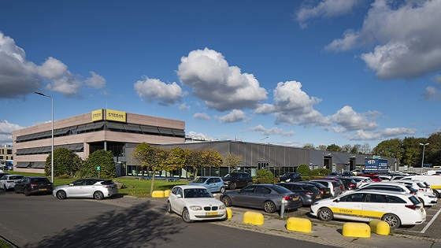

Wat voor werk doet Stedin?
Stedin is netbeheerder en zorgt voor de aanleg en onderhoud van het elektriciteit- en gasnetwerk.
Zo sluit Stedin woningen en bedrijven aan op het energienet.
Stedin houdt zich bezig met de energietransitie en maakt dan ook veel aanpassingen in hun energienetwerk
n.a.v. de groeiende energievraag en de toenemende druk op het energienetwerk. Stedin is geen energieleverancier.

Hoe groot is Stedin?
Stedin heeft rond de 3600 medewerkers.
Het bedrijf heeft 2,3 miljoen klanten.
Stedin zit in de provincies:
- Zeeland
- Zuid-Holland
- Utrecht
Stedin zit alleen in Nederland.
Wat zegt Stedin over hun bedrijfscultuur?
Stedin heeft de onderscheiding World-class Workplace 2022 Nederland gekregen.
Bij Stedin is er een goede werksfeer, veel ontwikkelingsmogelijkheden
en werk je iedere dag aan het transport van energie en de energietransitie.
Waarom spreekt Stedin als werkgever mij aan?
Wat ik bij Stedin erg leuk vind, is dat het een modern bedrijf is wat ook erg groot is.
Stedin heeft een grote en belangrijke taak en werkt daarnaast aan de energietransitie.
Ook de arbeidsvoorwaarden zijn heel erg gunstig bij Stedin.